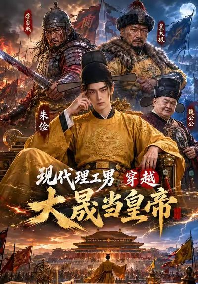

◆浙江财经大学东方学院
国内高校较早布局 AIGC 短片、AI 短剧教学研发；学子作品斩获首届 IIFSA 国际 AI 短片电影大赛「AI 卓越创新奖」（从全球 300 余部参赛作品中突围）。
遥触灵境（杭州）科技有限公司 · 首席执行官 CEO
国内最早一批深耕短剧赛道的平台操盘手
国内最早一批深耕短剧赛道的平台操盘手，拥有超过 10 年互联网内容行业实战经验。曾主导某头部短视频平台短剧业务从 0 到 1 的完整构建，一手搭建了行业领先的内容生产与合作体系，与 50 余家优质承制方建立了长期稳定的深度伙伴关系。
凭借对用户需求的精准洞察和对内容趋势的敏锐把握，成功打造了多个亿级播放量的爆款短剧，积累了丰富的平台资源和行业人脉。
兼具出色的战略规划与商务拓展能力——从平台操盘手到科技文化企业创始人，完成从内容生态参与者到产业生态构建者的跨越，现带领遥触灵境深耕 AIGC 内容工业化生产与产教融合。
成立于 2024 年，深耕 AIGC 领域的创新型科技文化企业。凭借自主研发的 Agent 和标准化 AIGC 生产流程，在人工智能内容生成领域多次实现重大突破，持续位于业内领先位置。
以 AI 驱动生产力革命，构建产教融合人才引擎，布局数字人元宇宙生态。


联合人社部门与青创学院落地，首期 AI 影视培训班 51 名学员，「结业即上岗、学成即创业」——临海首个 AI 影视培训直签案例。
国内高校较早布局 AIGC 短片、AI 短剧教学研发；学子作品斩获首届 IIFSA 国际 AI 短片电影大赛「AI 卓越创新奖」（从全球 300 余部参赛作品中突围）。
共建广电 MCN 智能创作基地，搭建 AI 协同生产流水线；引入爆款《番茄红了》（1.5 亿播放）成熟模式，具备 AIGC 短剧全链路实操经验。
从头部平台短剧业务 0 到 1 构建，到 AIGC 科技文化企业创立，10 年内容行业完整战略视野。
50 余家承制方深度合作网络，中影年年 AI 制作框架保底协议等产业级合作落地。
以 Sub-field Agent + 标准化 SOP 实现 AIGC 内容规模化生产，为品牌方与平台提供「创意生成 → 成品输出」的高效低成本解决方案。
「技术—教育—产业」三角闭环：技术反哺教育，教育输送人才，产业反推升级；先育才、再孵企、后成链。